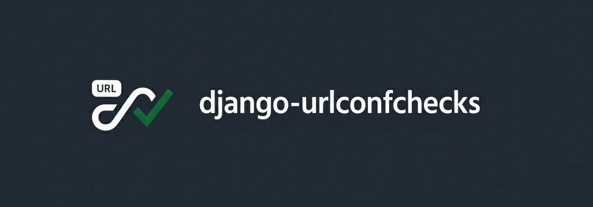

Django UrlConf Checks



Static checker that keeps your URL patterns and view annotations in sync, using Django’s built-in check framework.
The checker follows Django's resolver argument passing for path(), re_path(), nested include() calls, converter and regex captures, positional regex groups, and URL pattern keyword arguments.
For class-based views, it checks the methods selected by as_view() and DRF ViewSet actions, including handlers inherited from user base classes. It uses the same route arguments for each handler. The W001 star-argument warning is not emitted for class-based view handlers because *args and **kwargs are normal in Django generic views.
Key features
- Detects mismatches between URL converters/default kwargs and view annotations (ints, UUIDs, container generics, etc.).
- Works as a Django system check (
manage.py check) or standalone CLI. - Honors custom converters and fine-grained silencing per view.
- Pre-commit friendly; CI-ready with machine-readable output.
Installation
pip install django-urlconfchecks
Compatibility:
| Python | Django |
|---|---|
| 3.11 | 5.2 |
| 3.12–3.15 | 5.2, 6.0, 6.1 |
Supported Python versions follow the Python release cycle: versions are dropped once they reach end-of-life. Django has no upper bound, so new releases install without waiting for a package update.
Quick start
1) Install: pip install django-urlconfchecks
2) From your project root (where manage.py lives): urlconfchecks
* Or target a specific module: urlconfchecks --urlconf myproj.urls
3) Optional: add defaults in pyproject.toml:
[tool.urlconfchecks]
quiet = true
format = "json"
silenced_views = { "myproj.views.legacy_view" = "E002" }
CLI flags always override these defaults.
Usage
As a Django app
Add django_urlconfchecks to your INSTALLED_APPS list in your settings.py file.
INSTALLED_APPS = [
...
'django_urlconfchecks',
]
As a command line tool
Run this command from the root of your project, were manage.py is located:
$ urlconfchecks --help
Usage: urlconfchecks [OPTIONS]
Check all URLConfs for errors.
Options:
--version
-u, --urlconf PATH Specify the URLconf to check.
-q, --quiet Suppress human-readable output; exit codes still set.
-f, --format TEXT Output format. Supported: json.
--install-completion Install completion for the current shell.
--show-completion Show completion for the current shell, to copy it or
customize the installation.
--help Show this message and exit.
As a pre-commit hook
Add the following to your .pre-commit-config.yaml file:
- repo: https://github.com/AliSayyah/django-urlconfchecks
rev: v0.17.0
hooks:
- id: django-urlconfchecks
For more information, see the usage documentation.
The usage documentation also includes a ready-to-copy VS Code task.
What it catches (example)
# urls.py
from django.urls import path
from . import views
urlpatterns = [
path('articles/<str:year>/', views.year_archive),
path('articles/<int:year>/<int:month>/', views.month_archive),
path('articles/<int:year>/<int:month>/<slug:slug>/', views.article_detail),
]
# views.py
def year_archive(request, year: int):
pass
def month_archive(request, year: int, month: int):
pass
def article_detail(request, year: int, month: int, slug: str):
pass
Output:
(urlchecker.E002) For parameter `year`, annotated type int does not match expected `str` from urlconf
JSON (--format json):
{
"errors": [
{
"id": "urlchecker.E002",
"message": "View myproj.views.year_archive for parameter `year`, annotated type int does not match expected `str` from urlconf",
"obj": "<URLPattern 'articles/<str:year>/'>",
"hint": null
}
],
"warnings": [],
"total_errors": 1,
"total_warnings": 0
}
The checks include type mismatches (E002 and E005), missing or unexpected view arguments (E003, E004, and E006), too many positional regex arguments (E007), a parameter receiving both a positional URL value and a keyword argument (E008), and warnings for star arguments (W001 on function views), unknown converter output types (W002), missing annotations (W003), and optional regex groups without a view default (W004).
Use URLCONFCHECKS_SILENCED_VIEWS for fine-grained silencing. Class-based view handler errors use names such as my_project.views.ArticleView.get; my_project.views.ArticleView.* matches all handlers, and my_project.views.ArticleView matches the whole class. Function-view names keep the existing behavior.
Credits
- Luke Plant for providing the idea and the initial code.
- This package was created with Cookiecutter and the waynerv/cookiecutter-pypackage project template.